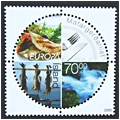

<< retur
Frimærkets magt
 Der skal sendes breve hjem til venner og familie i Danmark, så vi entrer posthuset i Posthusstræti. Stedet rummer en afdeling for filatelister, og jeg kan se, at der prales af en udgivelse fra 2005, som har vundet international anerkendelse. Det viser sig at handle om kåringen af årets Europamærke, hvis bundne emne dette år var gastronomi. Prisen for bedste design gik til det lille land i Nordatlanten foran en mængde konkurrenter; juryen fandt den runde form, forestillende en tallerken, genial, men hæftede sig også ved, at madmotiver og tekst var anbragt asymmetrisk i tallerknens fire kvartcirkler, således at den geometriske strenghed fik et dynamisk modspil. Jeg beslutter at overfrankere med de to værdier, mærket er fremstillet i, så mine mad-og æstetikbegejstrede venner derhjemme kan få noget at glædes over, men kan heller ikke lade være med at købe hele 2005 årsmappen til mig selv; og for resten også den fra året før. Barndommens fascination af de små lapper melder sig nemlig ubetvingeligt som altid, når jeg møder et land, der indgik i samlingen dengang. Dengang var, da sulten efter oplysning syntes umættelig, hvor videbegæret søgte alle mulige steder hen for at finde kilder at tappe af og bl.a. dvælede ved frimærkerne. Netop Island var et af mine foretrukne lande, fordi jeg fandt både kongetidens og republikkens mærker meget smukke og varierede, men dertil kom motivernes appel til nysgerrigheden, som følgelig snart sled voldsomt på siderne i husets beskedne leksikon.
Det gik op for mig, at Island i mange år var tæt knyttet til Danmark, da jeg første gang så mærkerne med Christian 9. fra 1902, og yderligere bekræftet med den senere udgivelse, hvor både Christian og sønnen Frederik 8. figurerer, men endelig besked om de historiske facts fik jeg først den dag, min far i 1954 forærede mig jubilæumssættet, der markerer Christian 10.' 25 år som konge over både Danmark og Island. Jeg fik at vide, at først havde Island været selvstændigt, så blev det underlagt Norge, for endelig at komme under Danmark i flere hundrede år. For 10 år siden, i 1944, fortalte min far, havde det atter fået sin selvstændighed og var nu en republik. Dengang i 1954 var jeg en knægt på 9 år og forstod måske ikke så farlig meget af de forklaringer om nationalfølelse og frigørelsesprocesser, min far kom med, men de lagde dog kimen til en mere moden alders indsigt, for interessen for islandske frimærker holdt endnu i mange år. Først i 1964, hvor postvæsnet markerede 20 årsdagen for republikkens indførelse med et smukt 25 kroner mærke, lagde jeg nødtvungent filatelien på hylden; som 19 årig studerende i København måtte jeg erkende, at den tid var forbi, hvor pigerne hoppede på den med frimærkesamlingen derhjemme.
I de mellemliggende ti år havde min samling imidlertid lært mig en masse om den sagnomspundne ø ude i Atlanten. Personen Jón Sigurdsson figurerer for eksempel hele tre gange på mærkerne, første gang i 1911 som den første ikke-royale person og som den første islænding, så noget særligt måtte han betyde. Opslag i husets gamle leksikon fortalte, at han var en stærkt nationalt bevidst politiker, der blev født 17. juni 1811 og døde i 1879. Senere blev hans betydning krystalklar, når man studerede de stilfulde frimærker fra selvstændighedsåret 1944, på hvilke Sigurdssons portræt ses med en glorieagtig skygge som baggrund. Mærkerne blev udgivet 17. juni på selv samme dag, republikken grundlagdes ude ved det gamle Alting på Tingvellir, og på Sigurdssons fødselsdag! Denne dato er i dag Islands nationaldag. Der hersker ingen tvivl om, at denne gamle nationalromantiker fremstår som øens frihedshelt par excellence. I forbindelse med udgivelser fra 1911 mødte jeg navnet Einar Jónsson, der havde lavet modellen til mærkets portræt, og også ham støder man ofte på i en Islandssamling; i min egen sad New York World Fair serien, hvor to værdier forestiller statuen af vikingeglobetrotteren Torfinnur Karlsefni, der i dag står i Philadelphia, og inden jeg blev grebet af generthed over at være filatelist, nåede jeg også at købe ”Den Fredløse” fra 1960, som kan nydes in natura i Reykjavik og må regnes for et af skulptørens hovedværker.
Andre spændende bekendtskaber var vikingen Hrafna Floki, nybyggeren Arnarson, Leif den Lykkelige, som enhver dreng dengang vidste hvem var, historikeren Snorri Sturluson, den henrettede biskop i Holar, Jón Arason, digteren Jónas Halgrimsson og mange flere. Sidstnævnte gjorde en stor indsats for at oplyse om og bevare landets særegne natur; med sine lyriske værker vakte han en stærk folkelig veneration for skønheden hos landskaber og dyr, som tydeligvis stadig eksisterer.
Når vi drenge byttede frimærker i hjembyen Frederikshavns filatelistklub, kan jeg huske, at særlig ét islandsk mærke var eftertragtet, et blåt trekantet 10 aurar luftpost med en rovfugl på, dels på grund af sin utraditionelle form, dels fordi mange af os samlede på ”naturen”. Ved siden af mine landesamlinger havde jeg selv en fin kollektion af motiver fra naturens verden, hvori også det omtalte trekantede befandt sig. Underligt nok, syntes jeg, udkom der i øvrigt kun et par fuglemotiver i postvæsnets første 91 år frem til 1964, til gengæld trykte man i 1960 det i særklasse smukkeste mærke med en jagtfalk på, som jeg kender. Sild, torsk, laks samt den Islandske hest udgjorde den øvrige fauna, og man fornemmede, at de væsner, landet var så overmåde rigt på, dengang paradoksalt nok ikke rigtig appellerede til fantasien hos udgivelseskommissionen, f.eks. figurerer der ud over et par edderfugle ingen andefugle på mærkerne i perioden. Jeg forestillede mig altid Island som et barsk område med en del søer jævnt fordelt i golde vulkanske landskaber med iskolde bræer ude i horisonten. Motiver som Gullfoss, Hekla og Geysir, navne som jeg altså tidligt kom til at forbinde noget med og tændte på at se i virkeligheden, animerede jo til en sådan opfattelse, så stor var min overraskelse over at finde en del blomstermærker fra øen, som i min indbildning kun kunne give næring til græs og mos. Der gik dog hurtigt sport i at artsbestemme de gengivne planter, så et mere realistisk syn på den islandske flora fik mulighed for at danne sig: Bredbladet gederams, Stedmoderblomst, Mælkebøtte, Storkenæb, Liden klokke, Ranunkel, Hvidkløver var nogle af dem, jeg fandt. Særlig interessant er 50 aur Dryas octopetala fra 1964, fordi denne vækst fyrre år senere valgtes som Islands nationalblomst efter befolkningens ønske. Fjeldsimmer, måske bedre kendt under navnet Rypelyng, er udbredt over hele landet, da den gerne vokser i både lavamarker og heder på grund af sin hårdførhed. Islændingene finder i Rypelyng en national symbolværdi, der går på kombinationen af styrke, skønhed (hvidgule blomster) og stolt udholdenhed (stedsegrøn).
Valget markeredes med udgivelsen af et flot designet 50 kr. mærke
i februar 2006, kan jeg se, nu hvor jeg står her på
posthuset, i lommen har jeg for resten en flora, som rummer eksempler
på omkring 400 islandske plantearter, så ajourføringen
vedrørende islandske planter er for længst en realitet.
Et frit tilgængeligt katalog, som dækker de ”blanke
år” i min samling, afslører, at der længst
er rådet bod på den svage dækning af Islands
fugle- og dyreverden, nu er næsten alt fra islom til hvaler
repræsenteret. Et frimærkesamlende barn af i dag vil
kunne anvende sin Islandssamling som guide til både øens
natur og kultur og som katalysator for et dybdeborende engagement
i en republik med rødder i en norrøn fortid men
med stærke stammer i både europæisk og amerikansk
nutid.
Jeg slikker ivrigt på de præmierede mærker, broderer konvolutterne med fisk og fjerkræ, kniv og gafler, skriver adresser på, poster og får pludselig en ubetvingelig lyst til at foreslå min medrejsende et solidt måltid mad.
Copyright. Tekst Preben Rasmussen. Foto Elisabeth Frank-rasmussen.
<< retur | |